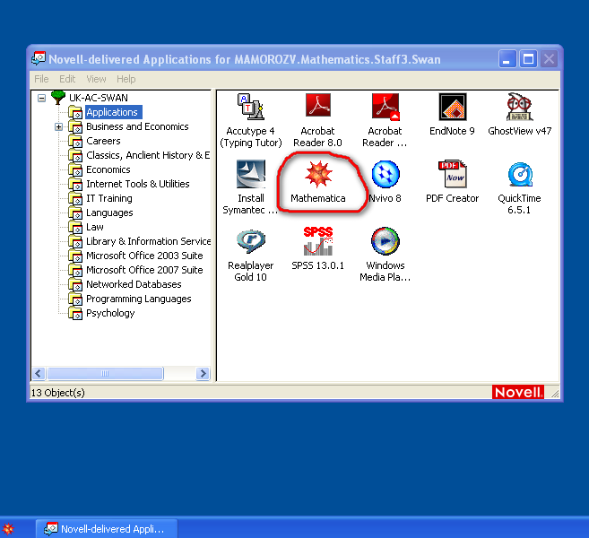
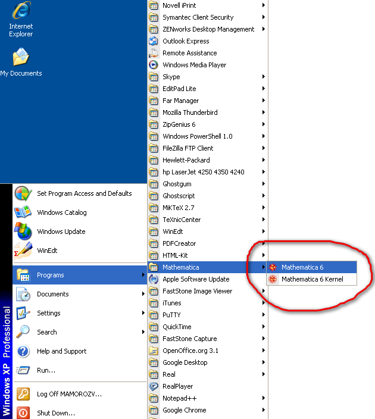
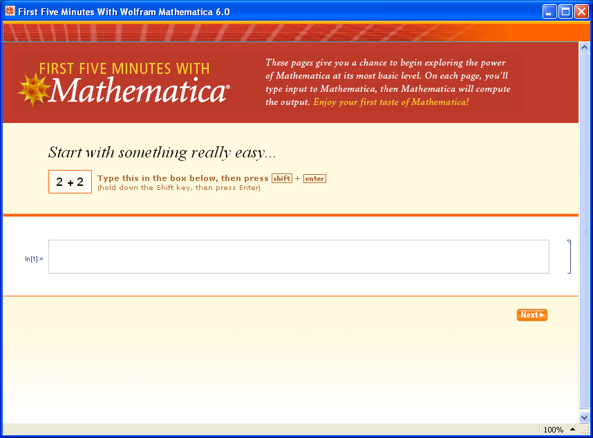
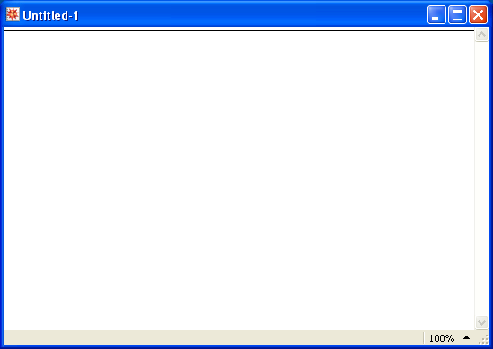
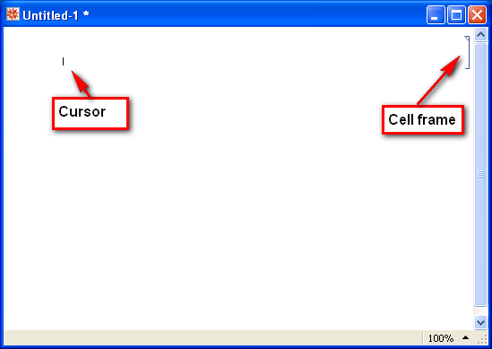
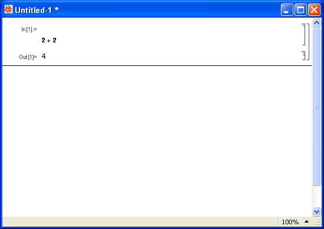
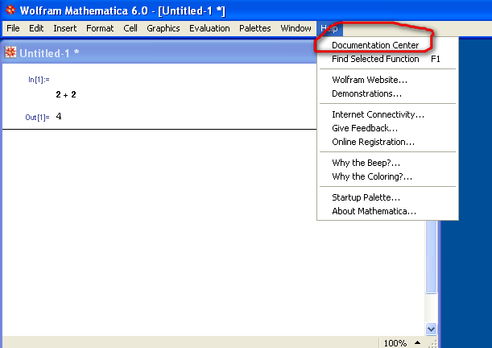
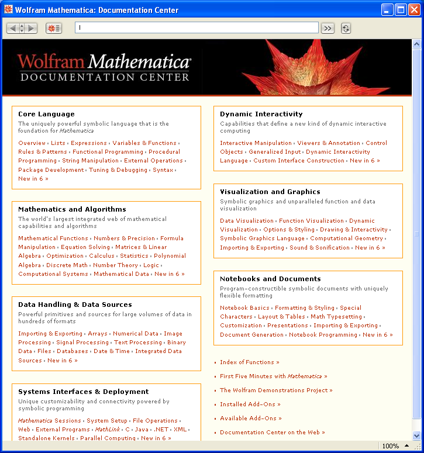
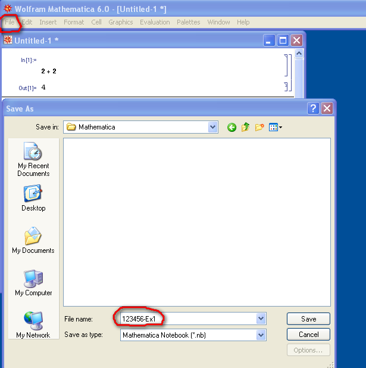

How to install and start MATHEMATICA for the first time
To install MATHEMATICA for the first time, locate it under Applications tab
within Novell delivered Applications
and double click on the MATHEMATICA icon:

After the installation process is completed (this could take some time),
you will be able to find MATHEMATICA under the usual Windows Start Menu:

Click on the Mathematica 6 icon (not on the Mathematica kernel!)
and you will have MATHEMATICA up and running:
It is a good idea to start working by running First five minutes with Mathematica
tutorial
which you will find under Mathematica Startup palette.

After you finished with the tutorial, start working with you own notebook,
which is usually called Untitled-1.nb (but you could rename it at any time).

First, by moving mouse over the notebook make sure that the cursor looks horizontal.
Then press Enter on the computer keyboard. This will create a new empty cell.
Make sure the cursor is inside the cell and looks vertical:

Now start typing using the keyboard and then press Shift and Enter
on the keyboard simultaneously.
This will execute the instruction:

This is your first result with MATHEMATICA!
Continue working, and always consult Documentation Center which could be started from the Help menu:

Documentation Center window looks like this:

Do not forget to save your notebook after you finish. This could be done from
MATHEMATICA
File menu in the same way as with any other Windows programm.
It is a good idea to include your student number in the name of the file
if you ever plan to submit this file as an assignment.

Good luck!